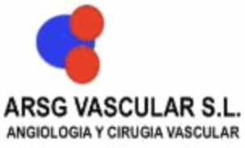

Unidad de Angiología y Cirugía Vascular
Hospital Vithas Sevilla
Cita previa954 46 40 25
Guardar contactoAñadir a la agenda
Cómo llegarHospital Vithas Sevilla · 1ª planta, consulta 140
Horario de cita previa
Martes y miércoles17:00 – 20:00
Jueves9:30 – 12:00
Consultas
Dr. Antonio R. Sánchez Guzmán
Martes y miércoles
Dr. José María Sánchez Rodríguez
Miércoles
Dr. Antonio Bohórquez Jiménez
Martes y jueves
Dónde estamos
Consulta nº 140 · Primera plantaHospital Vithas Sevilla
41950 Castilleja de la Cuesta (Sevilla)